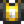
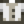
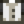
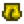

Prismatic Shard
Jump to navigation
Jump to search
| Prismatic Shard | |
| A very rare and powerful substance with unknown origins. | |
| Information | |
| Source | Mining • Fishing Treasure Chests • Monsters' drop • Omni Geodes • Rainbow Trout Fish Ponds • Treasure room • Statue Of True Perfection • Meteorite • Mystery Box • Golden Mystery Box |
| Sell Price | |
The Prismatic Shard is a Mineral. It is one of the rarest items in the game, and has a variety of uses, including obtaining the Galaxy Sword.
Locations
Prismatic shards can be found in:
- 25% chance from a Mystic Stone in the Mines at floors 100+, Skull Cavern, Quarry, and Volcano Dungeon.
- 25% chance from a meteorite.
- 1/26 (≈3.8%) chance from a treasure room in the Skull Cavern.
- 3.5% chance from an Iridium Node in the Skull Cavern, Quarry and Volcano Dungeon.
- 0.4% chance from an Omni Geode.
- 0.4% chance from a Mystery Box.
- 0.1% chance from Serpents and Mummies (and their dangerous variants). 0.05% chance from Shadow Brutes and Shadow Shaman (and their dangerous variants).
- 0.1% chance from Wilderness Golems and Iridium Golems after reaching Combat Level 10.
- 0.79% chance from a Golden Mystery Box.
- 0.09% daily chance from a Rainbow Trout Fish Pond with a population of at least 9.
- 0.05% chance from any monster after the player has reached the bottom of the Mines.
- ≈0.012% chance from a Fishing Treasure Chest after reaching fishing level 6.
- One in a chest at the top of the Volcano Dungeon the first time the player arrives there.
- Once per day from the Statue Of True Perfection.
- Purchased from Emily for
 500 Calico Eggs when she hosts a shop during the Desert Festival.
500 Calico Eggs when she hosts a shop during the Desert Festival. - From the Blessing Of The Butterfly (up to a 17.5% chance).
Uses
- A Prismatic Shard can be used in the Desert to obtain the Galaxy Sword. The Dwarvish Headstone in the graveyard contains a riddle explaining how to obtain it.
- A Prismatic Shard is one of the options used to complete the Missing Bundle to unlock the Movie Theater.
- A Prismatic Shard can be offered to the Dark Shrine of Selfishness at the Witch's Hut to turn children into doves (getting rid of them permanently).
- On Thursdays the Desert Trader sells 1 Magic Rock Candy for 3 Prismatic Shards.
- Prismatic Shards are used to enchant tools in the Forge.
- A Prismatic Shard can be placed into a Junimo Hut to cause the Junimo to cycle through the rainbow resembling a Prismatic Shard.
- A Prismatic Shard can be donated to Gunther at the Museum.
- A Prismatic Shard can be used in the Sewing Machine to create prismatic clothing (see Tailoring below).
- Prismatic Shards can be gifted as a universally loved gift (to everyone except Haley).
- Multiplayer only: A Prismatic Shard can be used to craft a Wedding Ring to propose marriage to another player.
Gifting
| Villager Reactions
| |
|---|---|
| Love | |
| Hate | |
Bundles
One Prismatic Shard is an option for  The Missing Bundle in the abandoned JojaMart.
The Missing Bundle in the abandoned JojaMart.
Recipes
| Image | Name | Description | Ingredients | Recipe Source |
|---|---|---|---|---|
| Wedding Ring | An old Zuzu City tradition... It's used to ask for another farmer's hand in marriage. Used only in multiplayer games. |
Traveling Cart |
Tailoring
Prismatic Shard is used in the spool of a Sewing Machine to create one of 5 random "prismatic" clothing items. It is possible to obtain duplicates before obtaining all 5 items.

Prismatic Shirt
Prismatic Shirt (white sleeves)
Prismatic Shirt (black sleeves)- Prismatic Pants

Prismatic Genie Pants
Quests
4 Prismatic Shards are requested in Mr. Qi's Four Precious Stones quest.
Notes
- Prismatic Shards cannot be duplicated in a Crystalarium. According to the Lost Book Technology Report!, "the EMF from the shard interacts negatively with the crystalarium."
History
- 1.0: Introduced.
- 1.3.27: Added to all monster drop pools after player has reached the bottom of the Mines.
- 1.4: Added as option for Missing Bundle. Fixed bug where an entire stack would be consumed when obtaining the Galaxy Sword. Can now be used in Tailoring. Can be produced by Fish Ponds.
- 1.5: Can be used to enchant tools. Obtained from the Statue Of True Perfection. One can be obtained at the top of the Volcano Dungeon. Requested in Four Precious Stones.
- 1.6: Chance of obtaining Prismatic Shard from Iridium Node decreased from 4% to 3.5%. Can now be obtained from Mystery Box, Golden Mystery Box, Meteorite, and Iridium Golem. Can now be purchased from Emily at the Desert Festival.
- 1.6.3: Reduced rate of the Meteorite dropping a Prismatic Shard from 100% to 25%.
| Minerals | |
|---|---|
| Foraged Minerals | Earth Crystal • Fire Quartz • Frozen Tear • Quartz |
| Gems | Amethyst • Aquamarine • Diamond • Emerald • Jade • Prismatic Shard • Ruby • Topaz |
| Geode Minerals | Aerinite • Alamite • Baryte • Basalt • Bixite • Calcite • Celestine • Dolomite • Esperite • Fairy Stone • Fire Opal • Fluorapatite • Geminite • Ghost Crystal • Granite • Helvite • Hematite • Jagoite • Jamborite • Jasper • Kyanite • Lemon Stone • Limestone • Lunarite • Malachite • Marble • Mudstone • Nekoite • Neptunite • Obsidian • Ocean Stone • Opal • Orpiment • Petrified Slime • Pyrite • Sandstone • Slate • Soapstone • Star Shards • Thunder Egg • Tigerseye |
| Geodes | Geode • Frozen Geode • Magma Geode • Omni Geode |